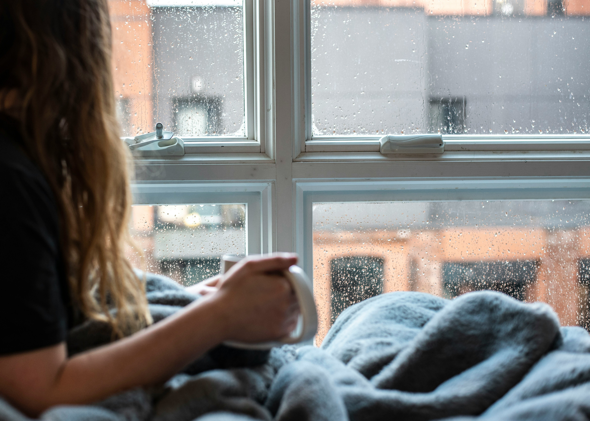

Håndtering af stress
Små, overskuelige vaner i hverdagen kan gøre en stor forskel.
Læs mereRUM er et digitalt fristed for unge. Her finder du råd, inspiration og redskaber til at håndtere stress, tankemylder og hverdagens pres.
Udforsk gode råd